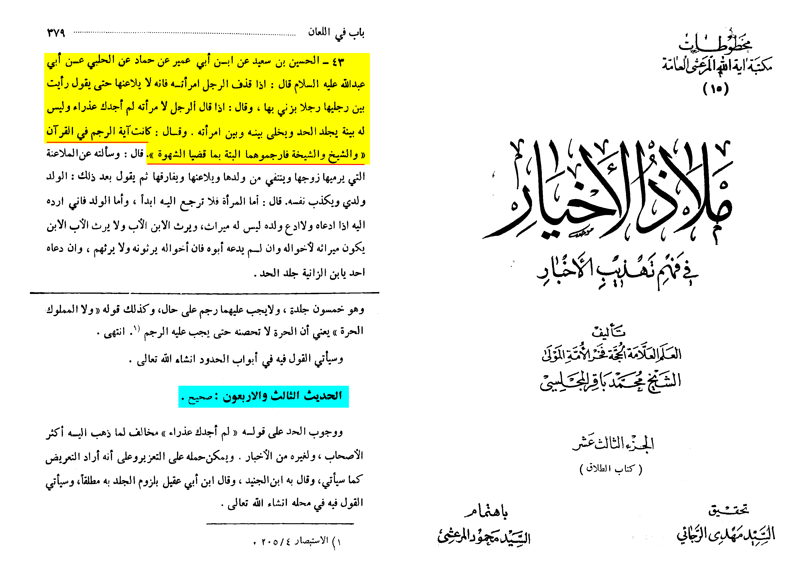
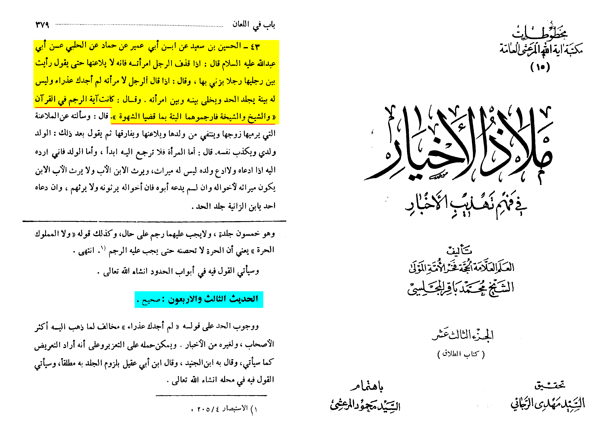

I would like to point out something, when it comes to silly stuff like this the Shia and other groups like
the christians like to bring.
TO ASSUME A VERSE HAS BEEN LOST DUE TO A BUFFALO OR A WHALE EATING IT YOU WOULD HAVE TO ASSUME THAT THEY WERE
NOT MEMORISED.
They were memorised!
Shubha
I will deal with stoning verses here first and the Suckling Verses
in a different channel. As this narration play a role in both
Same narration
Sunan ibn majah 1944
Shuyab al arnaoot declares the sanad weak due to Ibn ishaq
and says "the narration has a defect"
and mentions that there is different narration (SUNAN IBN MAJAH 1942) that dosent mention the Goat.
This will be in Suckling Verses because it dosent mention stoning.
same narration as sunan ibn majah 1944
Shuyab al arnaoot declares the sanad weak due to Ibn ishaq
and says "the narration has a defect"
and mentions in the footnote the different narrations that dont mention the Goat.
bn Hajar al Asaqlanis sharh on Bukhari 6830
"and consequently they may go astray by leaving an obligation that Allah has revealed"
Ibn hajar says: "The verse that is mentioned is what was abrogated in recitation and its ruling has remained,
and what Umar had mentioned ("I am afraid that after a long time has passed, people may say,
"We do not find the Verses of the Rajam (stoning to death) in the Holy Book,") has happened,
for a group of people from the Khawarij and the Mutazilah have rejected this.
Ibn hajar says with regards to Umars RA statement:
"And then we used to recite among the Verses in Allah's Book":
which is another verse in the hadith
'What has been abrogated in recitation'.
This is the narration in Bukhari.
Notice how Umar RA said "we recited the verse, understood it and memorised it"
Al Nawawi in his sharh says the same thing. The narration is Sahih Muslim 1691a
Al Nawawis on Umars RA comment: "He sent down the Book upon him, and the verse of stoning was included in what
was sent down to him. We recited it, retained it in our memory and understood it"
He says: (Umar) implied the verse of Stoning. Al Nawawi then writes down the ayah of stoning.
"If an old man and old woman commit adultery stone them both"
Al Nawawi continues to say "and this is what was abrogated in recitation and its ruling remained.
(In other verses) the ruling was abrogated and the recitation remained and (in other verses) both the ruling and
recitation were abrogated)
Imam badr al deen al ayni in his book Imdat al Qari fee sharh sahih al bukhari says
"(verses) in the Quran perhaps have been abrogated in recitation and its ruling remained such as :
"If an old man and old woman commit adultery stone them both"
Sa’d Ibn Ayyud Al Baji (رحمه الله) states:
“[…] and it is not correct to take the Qur’an as Thabit before the Ijmaa and the mass transmission of it,
therefore the person who goes against the Quran (before Ijmaa) will say ‘He added into the Quran what it
doesn’t contain’ and whoever agrees with him that it was revealed from the Quran and says he added into the
Quran which is impossible for him to prove due to it not being agreed upon it’s proving, and it is also possible
for another answer and it is that everyone agreed with him that it was revealed in the Quran but it was aborgated
in it’s recitation and the ruling stayed, then it is not
to be said from the Mushaf, bevause it is not proven for something to be from the Quran unless the recitation
still remains without the aborgation of it’s recitation”
Narrated by Kathir bin al Salt
He said: "We were with Marwan and among us was Zayd bin thabit and he said: 'we used to recite
'If an old man and old woman commit adultery stone them both' Marwan said: "Should we not include it in the Mushaf?"
Zayd replied: "No, Dont you see the two young men being stoned"? He said: "This was mentioned and Umar bin al khattab
was with us and he said: "I will cure you (of this confusion) they replied: "How", Umar said:
"The Prophet came and recited the stoning verse" I said: Oh Messenger of Allah allow me to write it (asked twice)
and the Propht said "I cannot have it written"
Al-Bayhaqi comments on this statement, saying:
"In this, and what came before it, are evidence that the ruling of the verse of stoning is affirmed and its
recitation is abrogated. This among matters of which I do not know of any disagreement"
'Umar bin Al-Khattab said:
"The Messenger of Allah (ﷺ) stoned, Abu Bakr stoned, and I stoned. If I didn't dislike that I add to the Book of
Allah. I would have written it in the Mushaf, for I fear that there will come a people and they will not find it
in the Book of Allah, so they will disbelieve in it."
Why would Umar dislike adding to the book of Allah?
It clearly abrogation in tilawa (recitation) but not in hukm.
Narrated by kathir bin salt:
Sadi bin al aas and Zaid bin thabit were writting the Masahif (The Quran) and they passed by this verse
(the stoning verse) Zaid said "I heard the prophet reciting 'If an old man and old woman commit adultery
stone them both' So Umar said when this verse was revealed i said to the prophet 'let me write it' Shubah said:
Its as if the prophet disliked it'
Zaid bin thabit hearing the Prophet reciting the stoning verse. This narration is alligned with the narration
of al bayhaqi. Except here it mentions when Umar asked the Prophet to write the verse down Shuaba said:
"It was as if the Prophet disliked that".
The prophet said in the narration in al bayhaqi: "I cannot have it written"
Ibn Hajar (رحمه الله) states:
“And this chapter is made to refute those who assume that a lot from the Qur’an was lost with the death of those
who knew it and this is something the Rafidah disagreed with"
In the 3rd page Ibn Hajar lists all the narration show abrogation in the recitation of the Quran. Specifically for
the stoning verse he says
"This supports what was proven from the companions from the mentioning of certain verses that have been revealed,
the verses were abrogated in recitation and the ruling remained or it didnt, such as the example of the hadith
from Umar: 'If an old man and old woman commit adultery stone them both'
Narrated by zirr bin hubyash
Ubayy bin Ka’b said to me; “How much of Surah Ahzab do you recite or how much do you count [its verses to be]?”
Zirr said that he replied, “so and so verses" Ubayy said; “It was similar to Surah Baqarah and we used to recite
in it, ‘Whenever an aged man or aged woman commit fornication stone them as a punishment from Allah and his messenger'"
So it was risen among what risen (abrogated verses being raised back to Allah)
 It was narrated that Ibn Abbas said:
`Umar said: Allah, may He be exalted, sent Muhammad (ﷺ) and sent down the Book to him. Among that which was
revealed to him was the verse of stoning. We recited it and understood it. But I fear that with the passage of time,
some people will say: We do not find the verse of stoning in the Book of Allah, and as a result an obligation that
Allah revealed will be forsaken. Stoning is the due punishment in the Book of Allah for those who commit zina,
both men and women, if they have been married and if proof is established, or there is a pregnancy or a confession.
Another Shubha the enemies of Islam can bring
Yusuf bin Mahran narrates that he heard from Ibn Abbas
"Umar ordered a caller to (announce) that the paryer will be prayed in Jamaah (collective)
(when the prayer was done) he went on the minbar and praised God and then said "do not abandon the verse
of stoning for indeed it was revealed in the Book of Allah, and we have read it, however it alot of the quran
has gone with Muhammad!"
One can interpret "alot of the Quran has gone with Muhammad" and "do not abandon the verse as stoning" as
abrogation from tilawa and didnt want people to abandon the punishment of stoning, and clearly Saydiuna Umar was right.
However the narration is rejected.
This narration is weak due to Ibn Judan also known as Ali bin Zayd.
Al Dahabi states in Mizan al itidal :
Shuba said: He was honorable
Hammad bin yazeed: He used to mix Ahadith
Fulas said: Yahya Ibn Qatan used to take and uphold his aḥadīth
Narrated by yazeed bin zury: Ali bin yazeed was a Rafidhi.
Ahmad said: He is weak
Yahya: he is not strong
Yahya again: he is nothing
Ahmad al ijili said: he was a shia, and not he is not strong
Bukhari and Abu Hatim said: He is not needed
Abu hatim: He writes his hadiths and I like him more than Yazeed bin Abi Zyad
Al Faswi: Makes mistakes when he got old
Ibn Khuzayama: I dont need him due to his poor memory
I (Al Dahabi) said: I reject him.
Essesntially the same thing in Mizan al i'tidal
Shuba said: He was honorable and used to narrate to us before he mixed up (narrations)
And even if the narration is authentic in Mussanaf abdulrazaq
its clear from the matn that Umar is speaking about abrogation, as he says "however it has gone along with the alot
of the quran with Muhammad!"
Key phrase here is "with Muhammad"
“Then it is said to them: If this narration was authentic from Ubay(ibn Ka’b), it does not necessitate a reduction in
the Qur’an nor anything being removed from it caused by him or any of the other Sahabah from which they were obligated
in it’s memorisation and recitation, and what would follow from them of failure and negligence with its loss
And that is a possible saying because what they used to recite in Sūrah al-Ahzāb was abrogated in recitation and the
obligation of memorising it was removed from them so for that they did not preserve it or recite it, and Ubayy DID NOT
say in his statement: 'We used to recite Sūrah al-Ahzāb, and it was as long as al-Baqarah that most of it was lost
nor that they and I together left memorising
it and neglected what was obligatory on us from that', and instead said: 'We used to recite it, and that it was as long
as al-Baqarah and that the verse of stoning was once included in it'
So nothing from this necessitates that the obligation of reciting it and memorising it remains, and that the people
neglected in its memorisation and lost it, with it being a possible saying to the abrogation of most of its recitation
and that is more befitting for him and the Sahabah
And he did not object to most of it [the Sūrah] being stories, examples and sermons then the recitation was abrogated
and the recitation of the stoning and with this he said: “And even if the verse of stoning was in it”, so he explained
to us that the verse of stoning is abrogated in its recitation even if the ruling remained the same so it’s as if
he said to us: “We read it before the abrogation, and the verse of stoning was in it, then most of it was abrogated including the verse of stoning”
Umar ibn al-Khattāb said: “Had it not been so that the people might say that Umar added to the book of Allah
i would’ve preserved it and recited: ‘The married old man and old woman [if they commit adultery] stone them’
And he did not say that except due to his knowledge and the knowledge of the Ummah that the verse was abrogated
and that preserving it would be exceeding what was established to be obligatory to preserve and memorise in what we will show after, God Willing.
And if it was like that he wouldn’t have rejected that the Sūrah as a whole was stories, information and examples,
or most of it was like Sūrah Yūsuf and al-Kahf and what is like them, and that nothing is in them that includes a
clear ruling except the one which it’s obligation remained, or abrogated but remained it’s ruling and the recitation
was memorised despite the removal of the obligation to do so for a place included for the ruling that was necessary for them
It’s not necessary despite the possibility of that to make the saying of Ubayy here an evidence for the reduction
of the Qur’an, or that Abī used to believe in that or that he was a part of it in this saying, and this explains the
invalidity of their comment on this narration from every aspect”
Ibn Hazm states:
"The verse of stoning, if revealed, it was memorised, made aware of it, and took part in it except that the
abrogated verses were not written in the Masahif".
We learn that from the books of Ahlul sunnah the verse of stoning was memorised by the companions of the
Prophet Muhammad during his lifetime and after his death based on the narrations I provided above.
So it wasnt "lost" because an animal ate it.
check out Suckling Verses
Onto the books of the Shia
Hadith #1: Abi Abdillah said: "Stoning is the greatest hadd of Allah And flogging is the is lesser. If a married man
commits zina, he will be stoned and not flogged".
Hadith #2: Abu Abdullah said : "If the free woman (ie non married woman) commits Zina, each one of them will be given a
hundred lashes. As for the married man and the married woman, they must be stoned"
Hadith #3: Abu Abdullah said: “Stoning is in the Qur’an in the saying of Allah swt If an old man and a Sheikha (female)
commit fornication, then stone them at all, for they have fulfilled their lust.”
Muhammad Baqir al majlsis states
Hadith #1: Sahih
Hadith #2: Muwathaq
Hadith #3: Sahih and also says
"This verse was promised from among the things that its recitation was abrogated without its ruling,
and it was narrated in other terms as well, and in any case, it is specific to the one who is married
from them according to the manner of the companions, and it is possible to generalize as it appears"
From Zurarah on the authority of Abu Abdullah (as) who said: The married one (who does adultery) shall be stoned,
and the one who possessed and did not enter into it (ie marriage) shall be flogged for a hundred and exiled for a year.
Taqi majlisi declared it to be sahih
Abu Abdullah, said: “Stoning is in the Qur’an in the saying of Allah swt If an old man and a Sheikha (female)
commit fornication, then stone them at all, for they have fulfilled their lust.”
Al Majlisi also authenticated this Miraat al uqool hadith # 3 ^
Taqi Majlisi also authenticated this
Abu Abdullah, said: “Stoning is in the Qur’an in the saying of Allah swt If an old man and a Sheikha (female)
commit fornication, then stone them at all, for they have fulfilled their lust.”
The same narration the Muhaqiq and Baqir Al Majlsi authenticated
After quoting the narration saying the verses of stoning are in the quran Taqi majlisi states:
I.e: punishment of stoning; Because they (the sahaba) lost their sexual desire due to old age, they deserved
the greatest punishment, unlike the youth. And if this verse was following the verse of stoning,
it would have been intended as a plural Stoning with flogging, and the ruling is specific to them.
Which is contrasted to the youth, they have stoning has a punishment.
And the ruling on stoning young men appeared from the Sunnah, and it appears that it was omitted from the text
(of the quran) when they committed adultery. Unless it happened after the verse of the stoning (was revealed).
And Ibn Sinan is quoted this with a similar meaning.
It was narrated that Ibn Abbas said:
`Umar said: Allah, may He be exalted, sent Muhammad (ﷺ) and sent down the Book to him. Among that which was
revealed to him was the verse of stoning. We recited it and understood it. But I fear that with the passage of time,
some people will say: We do not find the verse of stoning in the Book of Allah, and as a result an obligation that
Allah revealed will be forsaken. Stoning is the due punishment in the Book of Allah for those who commit zina,
both men and women, if they have been married and if proof is established, or there is a pregnancy or a confession.
Another Shubha the enemies of Islam can bring
Yusuf bin Mahran narrates that he heard from Ibn Abbas
"Umar ordered a caller to (announce) that the paryer will be prayed in Jamaah (collective)
(when the prayer was done) he went on the minbar and praised God and then said "do not abandon the verse
of stoning for indeed it was revealed in the Book of Allah, and we have read it, however it alot of the quran
has gone with Muhammad!"
One can interpret "alot of the Quran has gone with Muhammad" and "do not abandon the verse as stoning" as
abrogation from tilawa and didnt want people to abandon the punishment of stoning, and clearly Saydiuna Umar was right.
However the narration is rejected.
This narration is weak due to Ibn Judan also known as Ali bin Zayd.
Al Dahabi states in Mizan al itidal :
Shuba said: He was honorable
Hammad bin yazeed: He used to mix Ahadith
Fulas said: Yahya Ibn Qatan used to take and uphold his aḥadīth
Narrated by yazeed bin zury: Ali bin yazeed was a Rafidhi.
Ahmad said: He is weak
Yahya: he is not strong
Yahya again: he is nothing
Ahmad al ijili said: he was a shia, and not he is not strong
Bukhari and Abu Hatim said: He is not needed
Abu hatim: He writes his hadiths and I like him more than Yazeed bin Abi Zyad
Al Faswi: Makes mistakes when he got old
Ibn Khuzayama: I dont need him due to his poor memory
I (Al Dahabi) said: I reject him.
Essesntially the same thing in Mizan al i'tidal
Shuba said: He was honorable and used to narrate to us before he mixed up (narrations)
And even if the narration is authentic in Mussanaf abdulrazaq
its clear from the matn that Umar is speaking about abrogation, as he says "however it has gone along with the alot
of the quran with Muhammad!"
Key phrase here is "with Muhammad"
“Then it is said to them: If this narration was authentic from Ubay(ibn Ka’b), it does not necessitate a reduction in
the Qur’an nor anything being removed from it caused by him or any of the other Sahabah from which they were obligated
in it’s memorisation and recitation, and what would follow from them of failure and negligence with its loss
And that is a possible saying because what they used to recite in Sūrah al-Ahzāb was abrogated in recitation and the
obligation of memorising it was removed from them so for that they did not preserve it or recite it, and Ubayy DID NOT
say in his statement: 'We used to recite Sūrah al-Ahzāb, and it was as long as al-Baqarah that most of it was lost
nor that they and I together left memorising
it and neglected what was obligatory on us from that', and instead said: 'We used to recite it, and that it was as long
as al-Baqarah and that the verse of stoning was once included in it'
So nothing from this necessitates that the obligation of reciting it and memorising it remains, and that the people
neglected in its memorisation and lost it, with it being a possible saying to the abrogation of most of its recitation
and that is more befitting for him and the Sahabah
And he did not object to most of it [the Sūrah] being stories, examples and sermons then the recitation was abrogated
and the recitation of the stoning and with this he said: “And even if the verse of stoning was in it”, so he explained
to us that the verse of stoning is abrogated in its recitation even if the ruling remained the same so it’s as if
he said to us: “We read it before the abrogation, and the verse of stoning was in it, then most of it was abrogated including the verse of stoning”
Umar ibn al-Khattāb said: “Had it not been so that the people might say that Umar added to the book of Allah
i would’ve preserved it and recited: ‘The married old man and old woman [if they commit adultery] stone them’
And he did not say that except due to his knowledge and the knowledge of the Ummah that the verse was abrogated
and that preserving it would be exceeding what was established to be obligatory to preserve and memorise in what we will show after, God Willing.
And if it was like that he wouldn’t have rejected that the Sūrah as a whole was stories, information and examples,
or most of it was like Sūrah Yūsuf and al-Kahf and what is like them, and that nothing is in them that includes a
clear ruling except the one which it’s obligation remained, or abrogated but remained it’s ruling and the recitation
was memorised despite the removal of the obligation to do so for a place included for the ruling that was necessary for them
It’s not necessary despite the possibility of that to make the saying of Ubayy here an evidence for the reduction
of the Qur’an, or that Abī used to believe in that or that he was a part of it in this saying, and this explains the
invalidity of their comment on this narration from every aspect”
Ibn Hazm states:
"The verse of stoning, if revealed, it was memorised, made aware of it, and took part in it except that the
abrogated verses were not written in the Masahif".
We learn that from the books of Ahlul sunnah the verse of stoning was memorised by the companions of the
Prophet Muhammad during his lifetime and after his death based on the narrations I provided above.
So it wasnt "lost" because an animal ate it.
check out Suckling Verses
Onto the books of the Shia
Hadith #1: Abi Abdillah said: "Stoning is the greatest hadd of Allah And flogging is the is lesser. If a married man
commits zina, he will be stoned and not flogged".
Hadith #2: Abu Abdullah said : "If the free woman (ie non married woman) commits Zina, each one of them will be given a
hundred lashes. As for the married man and the married woman, they must be stoned"
Hadith #3: Abu Abdullah said: “Stoning is in the Qur’an in the saying of Allah swt If an old man and a Sheikha (female)
commit fornication, then stone them at all, for they have fulfilled their lust.”
Muhammad Baqir al majlsis states
Hadith #1: Sahih
Hadith #2: Muwathaq
Hadith #3: Sahih and also says
"This verse was promised from among the things that its recitation was abrogated without its ruling,
and it was narrated in other terms as well, and in any case, it is specific to the one who is married
from them according to the manner of the companions, and it is possible to generalize as it appears"
From Zurarah on the authority of Abu Abdullah (as) who said: The married one (who does adultery) shall be stoned,
and the one who possessed and did not enter into it (ie marriage) shall be flogged for a hundred and exiled for a year.
Taqi majlisi declared it to be sahih
Abu Abdullah, said: “Stoning is in the Qur’an in the saying of Allah swt If an old man and a Sheikha (female)
commit fornication, then stone them at all, for they have fulfilled their lust.”
Al Majlisi also authenticated this Miraat al uqool hadith # 3 ^
Taqi Majlisi also authenticated this
Abu Abdullah, said: “Stoning is in the Qur’an in the saying of Allah swt If an old man and a Sheikha (female)
commit fornication, then stone them at all, for they have fulfilled their lust.”
The same narration the Muhaqiq and Baqir Al Majlsi authenticated
After quoting the narration saying the verses of stoning are in the quran Taqi majlisi states:
I.e: punishment of stoning; Because they (the sahaba) lost their sexual desire due to old age, they deserved
the greatest punishment, unlike the youth. And if this verse was following the verse of stoning,
it would have been intended as a plural Stoning with flogging, and the ruling is specific to them.
Which is contrasted to the youth, they have stoning has a punishment.
And the ruling on stoning young men appeared from the Sunnah, and it appears that it was omitted from the text
(of the quran) when they committed adultery. Unless it happened after the verse of the stoning (was revealed).
And Ibn Sinan is quoted this with a similar meaning.
 And the General masses (ie the sunnis) narrated in their sahih narrations, that the verses of stoning were
omitted from the entire Quran because of Naskh tilawah (a type of abrogation) as the general masses narrated.
And some of the Shia followed this out of ignorance, and none of them pondered over this.
It's surprising the author mentioned in his treatise in his creed that the quran that Jibreel (as)
came down to the Prophet with (saw) that the quran doesn't have any additions nor is there anything abrogated from it.
Due to the evidences from the sunnis and the Shia which is mutawaatir that there are additions in it,
and subrations from it support the corrupted schools of thought.
However what is clear is that they took the names of Ahlul Bayt out of the Quran
If you also look at the bottom he has a section called
"On the corruption of the Quran" LOL
On the authority of Al-Halabi on the authority of Abu Abdullah, he said: When a man ejaculates his wife,
he does not curse her until he says, “I saw between her legs a man who committed adultery with her.”
And he said: If a man says to his wife, “I did not find you a virgin, and he has no evidence,
he will flog the punishment and be set free.” Between him and his wife, he said: The verse of stoning was
in the Qur’an and the sheikh and the Sheikha, so stone them at all, as they have fulfilled the lust....
Al Majlisi authenticated this

Al tusi states in his tafseer
The stoning verse, it was said that it was revealed and its recitation was raised (abrogated) and its ruling remained
"The people differed on how abrogation can occur and they're 4 groups"
After listening the first 3 he then states
"I say (Al Tusi) the 4th group permit the abrogation of the recitation alone or the Hukm (judgement/ ruling) Alone,
and to abrogate them both AND THIS IS CORRECT"
Abi Al Fadl Bin Al Hassan al Tabrasi also known as "Amin al Islam"
He states in his exegete of Surah 2:106
"Abrogation is of these (specific) examples, of them are
1) Both the recitation and ruling of a verse is raised (back to Allah) such as what was narrated by
Abu Bakr RA that he said: 'we USED to recite "Do not forsake your father for this is an act of kufr"
2) The ayah is proven to be from the scripture and the ruling is raised such as
"And if any of your wives desert you to the disbelievers, and later you take spoils from them, then pay
those whose wives have gone, the equivalent of whatever ˹dowry˺ they had paid. And be mindful of Allah,
in Whom you believe." Surah 60:11 (Tabrisi believes this ayahs hukm is raised back to Allah)
3)The ayah is raised in recitation and the hukm such as STONING VERSE for it was said that it was revealed,
and its recitation was raised. Alot of narrations have come to us that illustrate that verses were in the Quran
but it was abrogated in recitation, such as the narration of Abu Musa Al Ashari that they (the companions used
to recite)
"And if any of your wives desert you to the disbelievers, and later you take spoils from them, then pay those
whose wives have gone, the equivalent of whatever ˹dowry˺ they had paid. And be mindful of Allah,
in Whom you believe" then it was raised (abrogated)
He mentioned another narrated by Anas which was also abrogated in recitation.
And the General masses (ie the sunnis) narrated in their sahih narrations, that the verses of stoning were
omitted from the entire Quran because of Naskh tilawah (a type of abrogation) as the general masses narrated.
And some of the Shia followed this out of ignorance, and none of them pondered over this.
It's surprising the author mentioned in his treatise in his creed that the quran that Jibreel (as)
came down to the Prophet with (saw) that the quran doesn't have any additions nor is there anything abrogated from it.
Due to the evidences from the sunnis and the Shia which is mutawaatir that there are additions in it,
and subrations from it support the corrupted schools of thought.
However what is clear is that they took the names of Ahlul Bayt out of the Quran
If you also look at the bottom he has a section called
"On the corruption of the Quran" LOL
On the authority of Al-Halabi on the authority of Abu Abdullah, he said: When a man ejaculates his wife,
he does not curse her until he says, “I saw between her legs a man who committed adultery with her.”
And he said: If a man says to his wife, “I did not find you a virgin, and he has no evidence,
he will flog the punishment and be set free.” Between him and his wife, he said: The verse of stoning was
in the Qur’an and the sheikh and the Sheikha, so stone them at all, as they have fulfilled the lust....
Al Majlisi authenticated this

Al tusi states in his tafseer
The stoning verse, it was said that it was revealed and its recitation was raised (abrogated) and its ruling remained
"The people differed on how abrogation can occur and they're 4 groups"
After listening the first 3 he then states
"I say (Al Tusi) the 4th group permit the abrogation of the recitation alone or the Hukm (judgement/ ruling) Alone,
and to abrogate them both AND THIS IS CORRECT"
Abi Al Fadl Bin Al Hassan al Tabrasi also known as "Amin al Islam"
He states in his exegete of Surah 2:106
"Abrogation is of these (specific) examples, of them are
1) Both the recitation and ruling of a verse is raised (back to Allah) such as what was narrated by
Abu Bakr RA that he said: 'we USED to recite "Do not forsake your father for this is an act of kufr"
2) The ayah is proven to be from the scripture and the ruling is raised such as
"And if any of your wives desert you to the disbelievers, and later you take spoils from them, then pay
those whose wives have gone, the equivalent of whatever ˹dowry˺ they had paid. And be mindful of Allah,
in Whom you believe." Surah 60:11 (Tabrisi believes this ayahs hukm is raised back to Allah)
3)The ayah is raised in recitation and the hukm such as STONING VERSE for it was said that it was revealed,
and its recitation was raised. Alot of narrations have come to us that illustrate that verses were in the Quran
but it was abrogated in recitation, such as the narration of Abu Musa Al Ashari that they (the companions used
to recite)
"And if any of your wives desert you to the disbelievers, and later you take spoils from them, then pay those
whose wives have gone, the equivalent of whatever ˹dowry˺ they had paid. And be mindful of Allah,
in Whom you believe" then it was raised (abrogated)
He mentioned another narrated by Anas which was also abrogated in recitation.
 In Al Dar Al Mansud fee ahkam al hudud vol 1 pg 282
Al Kalyayakani also known as Al Sayid Muhammad rida he mentions:
The green highlights mention the stoning verses narration from their books that i showed above^^
The yellow highlight says:
The last two narrations (illustrate) the compulsory of stoning
Al Tusi says in his book Al ida fee usool al fiqh
"What was narrated of the stoning verse was abrogated in recitation and the ruling remained quotes the verse and
if this is what Allah had revealed (then) the ruling has remained without disgareement (among the knowledgable)"
In Al Dar Al Mansud fee ahkam al hudud vol 1 pg 282
Al Kalyayakani also known as Al Sayid Muhammad rida he mentions:
The green highlights mention the stoning verses narration from their books that i showed above^^
The yellow highlight says:
The last two narrations (illustrate) the compulsory of stoning
Al Tusi says in his book Al ida fee usool al fiqh
"What was narrated of the stoning verse was abrogated in recitation and the ruling remained quotes the verse and
if this is what Allah had revealed (then) the ruling has remained without disgareement (among the knowledgable)"
 In conclusion the verse of Stoning is also in the books of the Rafidah.
Al Majlisi also believed that this verse was abrogated in recitation. However it’s still in ruling.
Surah ahzab 200 verses Suckling Verses and somewhat similar as they mention the verses of stoning.
In conclusion the verse of Stoning is also in the books of the Rafidah.
Al Majlisi also believed that this verse was abrogated in recitation. However it’s still in ruling.
Surah ahzab 200 verses Suckling Verses and somewhat similar as they mention the verses of stoning.